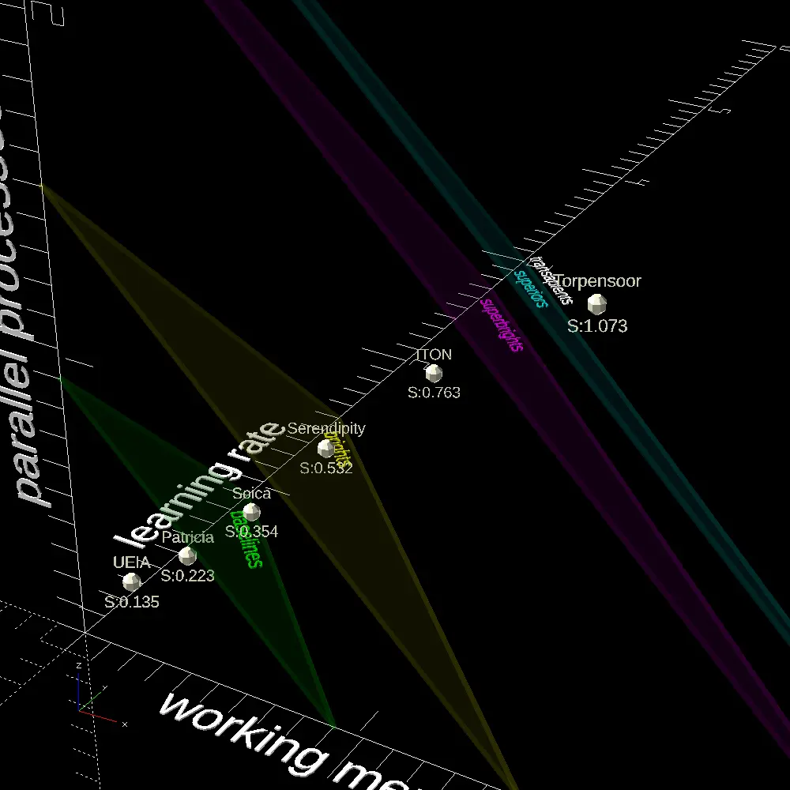

This page discusses the setting from a writing perspective and should not be treated as establishing in-setting facts.
This page mentions contents that are not a part of the Stareater Expanse setting.
link to this page
Orion's Arm compatibility
 This page discusses ways to make the setting and its characters compatible with Orion's Arm Universe Project, and ways to reframe them such that they fit in.
The contents of this wiki as a whole are separate from Orion's Arm, and the mentioned concepts from Orion's Arm such as transapients and toposophic levels are not a part of the Stareater Expanse setting, they are only mentioned for comparison and discussion of how the two settings relate to each other.
Anything I propose here is also not to be interpreted as a part of Orion's Arm setting, but rather my own idea of how the two settings could be brought together and a description of how I would go about doing so.
This page discusses ways to make the setting and its characters compatible with Orion's Arm Universe Project, and ways to reframe them such that they fit in.
The contents of this wiki as a whole are separate from Orion's Arm, and the mentioned concepts from Orion's Arm such as transapients and toposophic levels are not a part of the Stareater Expanse setting, they are only mentioned for comparison and discussion of how the two settings relate to each other.
Anything I propose here is also not to be interpreted as a part of Orion's Arm setting, but rather my own idea of how the two settings could be brought together and a description of how I would go about doing so.
warning this page requires careful interpretation, as for example the fact that the Torpensoor scores Si:1.11 according to the working memory toposophic estimation metric does not mean that zie is an Si:1.11 level transapient.
Majority of my worldbuilding requires a similar kind of careful interpretation but I feel it is worth restating here in case readers unfamiliar with the rest of the wiki come to read just this page.
Toposophic Estimation Metrics
Stareater Expanse does not have the concept of toposophic levels, and does not have transapients as they appear in OA, but it does have its own framework of psychometrics.
Since I already have some psychometric data about my characters I can apply simple formulas to estimate their toposophic level in OA terms.
Currently this includes the following:
-
working memory (m):
Si = log10(m)/4.5
This estimates a toposophic level of Si:0.2 for a baseline human with working memory size of 8 elements, and for example my character Serendipity with 131 elements working memory size would be estimated as Si:0.47
An entity with a working memory capacity of 31 623 elements, which is between 3513 and 6325 times more than a baseline human, would score an almost perfect Si:1 on this estimator.
-
TODO
model size? information-wise size of the brain?
The number of bits required to store the mind of the character.
How can I generalize this? This would not be consistently applicable to organic brains.
How about: Number of synapses if applicable. - that way human brains and human mind uploads aren't vastly different. Nearly all AI in stareater expanse use synapses of some kind so it would be applicable to them too. The problem here is that no such data is available for transapients, as in, if they even use synapses at all.
-
Learning rate
Given one instance of being told something, what is the probability that a person will have "learned" it?
Eg. let's say a baseline human would have a 20% probability of learning something for good upon seeing or otherwise interacting with the new knowledge a single time.
Given how composite minds work in Stareater Expanse a composite mind of 3 human brains would have a higher learning rate because each of them independently has the chance to learn, ie. while the single human brain had an 80% chance to have failed to learn, the 3 combined ones would have an 80% each, thus only a 51.2% chance that all of them failed at once, giving a 48.8% learning chance.
If you have a composite mind of 10 human brains then there is only a 10.7% chance they would all fail to learn at the same time, giving an 89.3% learning chance.
If we move up to transapients we could have a learning chance above 100%, defined as having learned something beyond the modosophont level.
formula for learning rate S-level estimate: [S = 0.2×log10(100 × x) + 0.8x^5 - 0.2x] :where X is the learning rate expressed as a fraction (eg 20% = 0.2, 48.8% = 0.488, 89.3% = 0.893. Apply multiplication and division before addition and substraction as usual.
Alternative formula: [ S = 0.2×log10(49 × x) + x^3/1.51 ] (currently not used anywhere)
Another alternative: [ S = 1.2x^5 - 0.4x^4 - 1.5x^2 + 1.7x ] (also not used - this one adheres better to the statement saying that a human baseline of 100 IQ is Si:0.3, however, the IQ scale routinely gets recalibrated, and the trend is that over the decades the average IQ score would have gradually kept going up if we did not recalibrate the scale, so it is entirely possible that in stareater expanse, which is mainly years 2500 to 3000, it might be that a person of 100IQ is closer to Si:0.2, whereas in orion's arm, after gregorian year 13000, the IQ scale is calibrated a bit upwards, so there a baseline with 100 IQ would correspond to Si:0.3) ALSO this one does not suffer the problem of very low learning rates such as 0.01 giving negative S-level estiamte
This also presents an opportunity for fine-tuning a character's estiamted toposophic level since if they are said to be thoroughly modosophont their learning rate defined this way would be below 100%, and if they are transapient then it would be above 100%. A perfectly basic transapient has a 100% learning rate which corresponds to succesfully learning all modosophont-accessible knowledge on the first opportunity to do so.
The formulas don't strictly break down when given values above 100% but the meaning of such input and their corresponding output is dubious - this is not intended for entities far past basic transapience, and presumably learning 120% of the attainable knowledge would mean learning something that is beyond modosophont minds to understand, but the formula was never made for that, as given that example of 120% learning rate, the resulting Si estiamte is 2.166, which is obviously wrong, and the real conclusion is that this formula simply isn't fit for use in the Si:1 to Si:2 range.
-
Num. of paralel thought streams (paraleity): [log10(10x + 1)/5.5]
Non-integers could mean occasional capability for the higher value, or just be an average, eg. 1.5 meaning the mind is processing only one thing at a time, but sometimes two
Vast majority of the Stareater Expanse characters would likely fall somewhere on the range between 0 and 1 on OA's commonly used toposophic scales.
Additionally some bits of vocabulary are in use throughout OA which are used loosely in the same that we use "genius" for people we consider smart regardless of whether they really managed to score at least 125 on an IQ test at least once in the past. These would be "bright" (S:0.3 to S:0.4) and "superbright" (S:0.4 to S0.9). Anyone at and above S:1 is a transapient. The range between S:0.9 and S:1 is referred to as superior (not to be confused with the homo superior clade).
